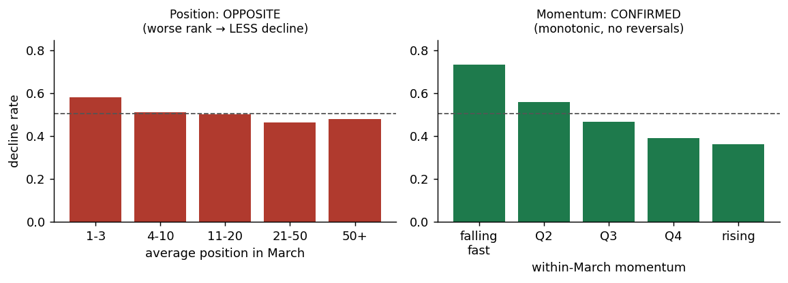
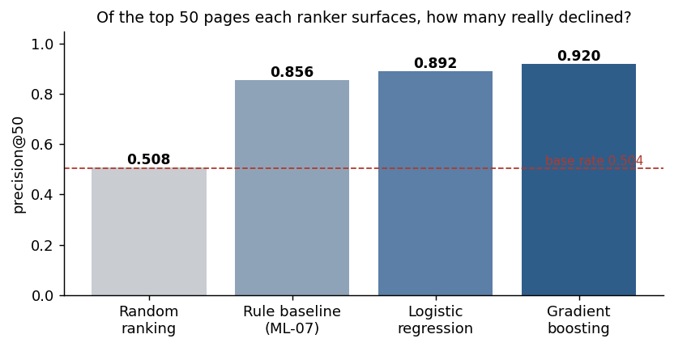
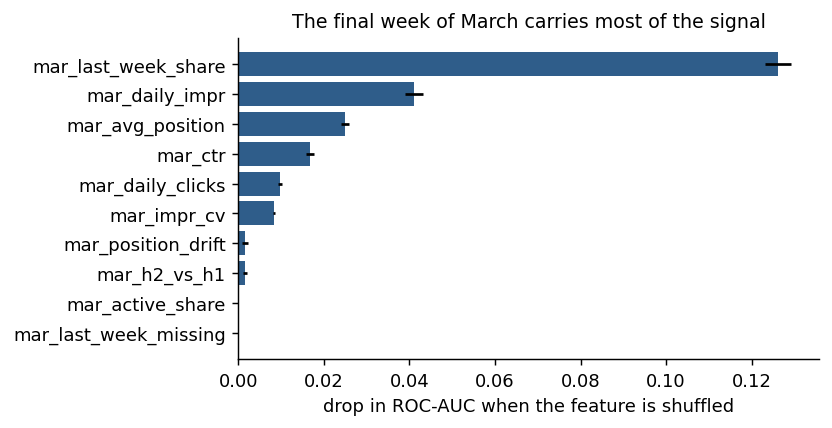

Abstract01
A content team that can review roughly 50 pages a week has to choose which 50, and simple decline triggers fire on 44% of a 116,539-page portfolio — so the scarce resource is attention, not detection. Using one month of Google Search Console data from the FlyRank internship warehouse (2026‑03, 40 clients, 9.8 million page-days), I built ten features observable on 31 March and an observed label from the following month: a page declines if its April daily impressions fall more than 20% below its own March daily rate. I compared a transparent hand-written rule against logistic regression and gradient boosting on an identical split grouped by client, and audited the result for leakage by deliberately planting a label-derived feature, by attacking the dominant feature, and by reporting the gap against an optimistic random split. The gradient-boosted model ranks pages at precision@50 of 0.920 against a 0.504 base rate and a 0.856 rule baseline, and the strongest single feature turned out to be the share of the month's impressions falling in its final seven days — recency, not the half-versus-half trend the rule was built on. The result is decision-support for ordering an editorial queue on one month of one panel; it is not causal, and it says nothing about how any search engine ranks pages.
The decision this supports02
An editor opens a content dashboard on Monday morning. Several hundred pages carry some kind of warning flag. She has time for about fifty. Which fifty?
That is the entire problem, and it is not a detection problem. Applying three plain triggers — traffic falling inside the month, low click-through on visible pages, average rank slipping — flags a large share of the eligible corpus. At 50 reviews a week, working through everything flagged would take years. A binary flag that fires on a substantial fraction of pages tells an editor almost nothing about where to start.
So the output has to be an order, not a yes-or-no. I frame this as a scoring and ranking task where the ranking signal is a predicted probability, and I measure it with precision@50, because that is the only part of the ranking anyone will ever see. Accuracy across 116,539 pages would be a number about pages nobody opens.
A wrong answer has two costs. A page ranked highly that was fine wastes one of fifty weekly slots. A declining page ranked low keeps declining unattended. Both are measured in editor-hours, which is why the metric sits at the top of the queue rather than across the whole corpus.
Data03
The FlyRank ML Internship warehouse release, build v20260703, hosted on Hugging Face under gated access. I use one table — fact_content_daily_performance — and two of its eighteen monthly partitions. Its grain is one row per report date, client and content item: 9,841,378 rows in March 2026 alone.
Windows
The decision moment is 31 March 2026. Features are computed from 1–31 March; the label is measured across 1–30 April. The two windows do not overlap by a single day.
March has 31 days and April has 30, so every measure is a daily rate rather than a monthly total. Comparing raw sums would have written a 3.2% decline into every page in the portfolio, and the label would have been measuring the calendar.
Unit of analysis
One row is one content page belonging to one client, summarised over March. The key is the pair of pseudonymous hashes for client and content, and a grain probe returns no duplicate keys. Those identifiers are used for grouping and joining only, never as model inputs. After filtering to pages with search data available, at least 15 days of March history and at least 30 March impressions, the frame holds 116,539 pages across 40 clients.
What I excluded, and why
The whole content dimension table. It is a current-state snapshot with no as-of date, and its optimization dates run from late April to early July — every non-null value falls after the decision moment, some by fourteen weeks. I built a staleness feature from it in an early pass and every value came out negative, which is how the problem surfaced. Word count and content type carry the same defect less visibly: today's word count is not March's.
All analytics-platform fields. Available for only 4.2% of March rows, and availability tracks whether a client purchased that platform at all. A field present for one row in twenty-four is a client fingerprint rather than a content signal.
The 90-day query table. Its grain is finer than the decision, and its fixed window overlaps the label window.
Two properties of this data worth stating plainly
Rows where search data is unavailable are zero-filled, not null: 6,230,317 March rows carry a non-null impression count summing to exactly zero. An unfiltered average would quietly include 6.2 million fabricated zeros, so the availability filter is a correctness requirement rather than housekeeping.
The analytics availability flag additionally contains 3,018,741 nulls where the search flag contains none. In SQL a null satisfies neither = TRUE nor = FALSE, so filtering with = FALSE silently drops three million rows and the two counts no longer reconcile to the total. IS TRUE is the only form that survives three-valued logic.
Finally, 999 pages have no rows at all in the last week of March. They decline at 0.751 against 0.502 for everyone else, so absence itself carries signal. I fill their last-week share with zero and carry an explicit flag, rather than imputing a median that would have claimed they had an ordinary week.
Everything on this page is public-safe: all identifiers are pseudonymous hashes, and no client names, domains, page URLs or search queries appear anywhere in the paper, the notebooks or the published artifacts.
Methodology04
The label
A page is labelled as declining when its April daily impressions fall below 80% of its own March daily rate. This is an outcome observed in a window the features cannot see, not a bucket derived from someone's rule — a distinction that matters, because a rule-derived label teaches a model the rule rather than the world. The base rate is 50.4%, close enough to balanced that accuracy would carry almost no information and precision at the top of the queue carries the evaluation instead.
Pages present in March but absent from April, 0.9% of the frame, are read as zero April traffic. That is a choice: they may instead have been deleted. This release has no event log, so the two cannot be distinguished.
Testing the signals before trusting them
Before writing any rule I checked two signals that sit behind widely used content flags. Both failed, and the failures were more useful than a confirmation would have been.

Features
Ten features, all computable on 31 March: daily impressions, impression-weighted average position, click-through rate, daily clicks, the half-versus-half momentum ratio, the share of the month's impressions falling in its last seven days, a flag for pages with no final-week rows at all, the share of days with any impressions, impression volatility relative to the mean, and the drift in average position between the two halves of the month.
One of those is dead, and I am reporting it rather than quietly removing it. The share of days with any impressions came back constant at exactly 1.0 for all 116,539 rows — every page clearing the 30-impression floor has impressions on every available day. Its permutation importance is exactly zero and removing it changes the headline scores by nothing at all. It is the second time I built that feature and the second time it was degenerate.
Baseline
A transparent rule, written and frozen before any model work: a page scores max(0, −momentum) × log1p(daily impressions). In plain words, it ranks a page highly when traffic is already falling inside March and enough traffic remains to be worth saving. Multiplying rather than adding means it needs both, so a collapsing page with two impressions a day and a large stable page both score near zero. Its thresholds came from bucket tables, never from tuning against the evaluation metric.
Validation
Five-fold cross-validation grouped by client. Pages belonging to one client share hidden character — the same site, templates and editorial team — so a random split lets a model memorise the client and report skill it does not have. The honest question is whether it works on a client it has never seen.
I report the gap rather than hide it: grouped validation gives ROC-AUC 0.7298, an optimistic random split gives 0.7493. The 0.0195 difference is small, which is itself the finding — client memorisation was not doing much of the work here. Seeds are fixed at zero throughout; scikit-learn 1.6.1, DuckDB 1.3.2.
Leakage checks
- Timeline. Every feature is computed inside March; the label lives in April. No overlap.
- The harness was tested by breaking it on purpose. In an earlier notebook I added the label's own input as a feature: ROC-AUC jumped from 0.6942 to 0.9996 and precision@50 hit a perfect 1.000. A test harness that cannot be fooled by a planted leak is a broken harness. I then deleted the feature and kept the honest number.
- No existing product flags as inputs. Scores and flags produced by an existing system encode a decision someone already made; using them teaches the old rule rather than the world. The shipped rule is something to beat, never something to consume.
- The dominant feature was attacked, not celebrated. Last-week share carries roughly three times the permutation importance of anything else, which is exactly the shape leakage makes. Retraining without it drops ROC-AUC from 0.7298 to 0.6948. A leaked feature collapses the model toward 0.500; a 0.035 drop means the feature is simply strong — and it should be, since it is the part of the window closest in time to the outcome.
- Population selection disclosed. Rows require search data availability in both months, so surviving pages are partly selected on information from the outcome window. That is a choice rather than an error, but hiding it would not be.
Results05
All four rankers evaluated on the identical client-grouped split, the same data and the same metrics.
| Ranker | ROC-AUC | Precision@50 | Precision@100 |
|---|---|---|---|
| Random ranking | 0.500 | 0.508 | — |
| Rule baseline, frozen | 0.640 | 0.856 | 0.864 |
| Logistic regression | 0.700 | 0.892 | 0.876 |
| Gradient boosting | 0.730 | 0.920 | 0.912 |
The model beats the rule by 0.090 ROC-AUC and 6.4 points of precision@50. Worth noting what it is beating: the rule itself scores 0.856 against a random floor of 0.508, so this is not a weak baseline flattering a model. Both are doing real work, and the model's margin is earned against a strong opponent.

What the model leans on
Permutation importance puts the last-week impression share far ahead of everything else, then daily impressions and average position. The finding is that the final seven days of the feature window carry most of the signal. Recency beats the half-versus-half comparison the rule was built on — and once last-week share is available, the momentum ratio that formed the rule's entire basis drops to near-zero importance.

Where it is wrong
Error is highest in the middle volume quintiles and lowest among high-volume pages: large pages are easier to call, mid-sized pages are noisiest.
The three most confident mistakes share a shape. All were scored above 0.94 and none declined. In each, March's second half collapsed and April recovered to roughly the March average rather than continuing down — 17.3 to 17.8 daily impressions, 1613 to 1501, 106.5 to 169.1. These are reversion cases: pages that dipped inside the window and bounced back. Using March data alone, "still falling" and "already bottomed out" look identical. That is the model's ceiling, not a bug awaiting a fix.
A number I discarded rather than published: an early run reported a majority-class dummy classifier at precision@50 of 0.768, which looked like a meaningful floor. It is not. A dummy classifier assigns every row the same probability, so its "top 50" is simply the first fifty rows in index order. The honest floor is random ranking at 0.508, and that is what the table above uses.
Limitations and honest framing06
This is one month transition. A single as-of date, March into April. Seasonality, an algorithm update during March, or one large client's site migration would all be invisible here and indistinguishable from a real pattern. The release holds eighteen monthly partitions; using several as-of dates with a sealed final month would test whether this result is stable over time. I did not do that, so I cannot claim that it is.
Forty clients of 104, and they are the well-instrumented ones. The funnel: 67 clients have search-console access, 55 appear in the March partition, 40 survive the availability filter and the eligibility floors. Fifteen clients have search history beginning after 1 March — their March data does not exist. So this is a result for clients with mature search instrumentation, and the newest third of the panel, arguably where a refresh queue would help most, is absent from it.
The clients that remain are unevenly weighted. The largest single client is about a fifth of the frame and the top five are roughly two-thirds of it. "Forty clients" overstates the diversity, and per-fold numbers move accordingly.
Selection on the outcome window. The population requires search data availability in both March and April, so pages that vanished from tracking entirely are not in the frame. The analysis is partly conditioning on survival.
Publish dates cannot be checked. A page published on 10 March would look like a collapse in any within-March comparison, because its first half is partly pre-launch. The content dimension table has no as-of snapshot, so there is no trustworthy publish date and this cannot be ruled out for any row in the queue. It is the largest unquantified risk in the work.
No causal claim is available. This is observational data with no experiment and no control group. The model can rank pages by predicted decline. It cannot show that refreshing them causes recovery, and nothing here describes how any search engine's ranking system works — what was modelled is outcomes in one portfolio of pages.
What can be said, precisely. On this data, across this one transition, a gradient-boosted model ranks pages by next-month impression decline at precision@50 of 0.920, against a 0.504 base rate and a 0.856 rule baseline, under client-grouped validation. That is observed, and it is decision-support. It is not causal, not validated across time, and not generalised beyond this panel.
Ranked recommendations07
The deliverable an editor receives is a ranked queue where every row carries one reason code and one action. The model supplies the ordering; the reason codes make the ordering readable, because a ranked list without stated reasons is not something a person can act on with confidence.
| Reason code | Action | Pages | Decline rate | Median daily impressions |
|---|---|---|---|---|
| High risk, high value | Refresh now | 3,682 | 0.846 | 115.2 |
| High risk, low value | Review later | 7,972 | 0.823 | 14.3 |
| Recent collapse | Investigate | 5,171 | 0.688 | 3.5 |
| Moderate risk | Monitor | 20,028 | 0.631 | 30.2 |
| Stable | No action | 79,686 | 0.413 | 17.7 |
Refresh now is the week's work: 3,682 pages that combine top-decile risk with real traffic, declining at 0.846. At fifty reviews a week this is more than a year of queue, which is the point — the ordering inside it is what makes the first fifty worth opening.
Investigate exists because of what the model revealed rather than because I planned it. When the strongest feature is the final week of the window, a page whose last week nearly vanished may have a tracking or crawl problem rather than a content problem, and sending an editor to rewrite it would be the wrong response. In practice this code catches small pages — a median of 3.5 daily impressions — so it functions as a triage lane for thin, erratic content rather than for large broken pages. Separating those before they reach the refresh queue follows directly from the importance result.
In the top ten of the queue, ten of ten pages did decline. That is a clean number and also a small and homogeneous one: every one of those pages placed between 0% and 5% of its monthly impressions in the final week, against roughly 23% for a flat page. The model is finding one extreme pattern very reliably. The top ten spans five different clients, which is worth checking — had they come from a single client, the likeliest explanation would have been that client's tracking breaking rather than any content signal.
How to read the queue. Trust the set more than the order. Scores compress quickly below the top, so rank 3 and rank 18 are closer than their positions suggest. Membership in the top fifty is meaningful; the exact sequence within it is not, and an editor should not treat it as a priority ladder.
What would make any single recommendation wrong, in the order it concerns me: a publish date inside the feature window, which cannot be checked; seasonal or event traffic that ought to fall and will return unaided; a client-wide tracking break that makes many pages collapse together; and reversion, where a page has already bottomed out and recovers without help.
Reproducibility08
Every number on this page is produced by the capstone notebook, which runs top to bottom against the gated warehouse release. The repository also holds the assignment notebooks this work was built from: the task framing, the data contract with its deliberate-leak experiment, and the frozen rule baseline.
Machine-readable receipts are committed alongside: capstone_metrics.json carries every score in the comparison table with per-fold values, and capstone_summary.json carries the windows, label definition, validation design, leakage-check result, seeds and library versions. The ranked queue is regenerated on every run rather than committed, so no row-level data is published.
Random seeds are fixed at zero throughout. Results were produced with scikit-learn 1.6.1 and DuckDB 1.3.2; tree-ensemble numbers can shift slightly between library versions. Warehouse access is gated with instant approval, and the read token is supplied at runtime from a secrets store — no credential appears in any notebook.
Acknowledgments and data credit09
Built on the FlyRank ML Internship dataset — flyrank.ai. The warehouse release is real, pseudonymised search-performance data covering 104 clients and roughly 79 million page-days, and this work would not exist without it being made available to interns.
Thanks to the FlyRank ML track for the sessions on framing, leakage and honest validation. The insistence on testing a signal before building on it is the reason this paper reports two negative results instead of a rule quietly built on a backwards assumption.